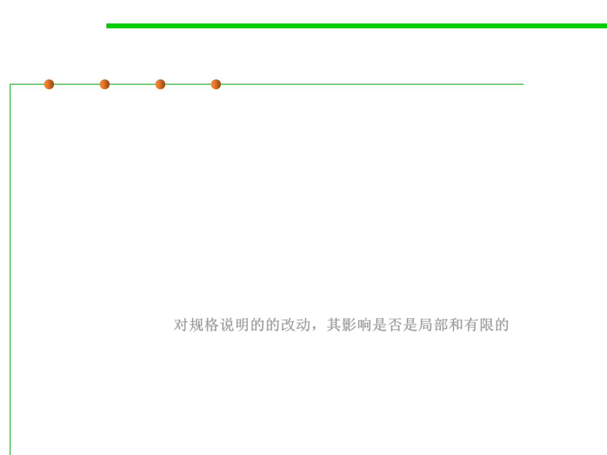

6.1 Metrics and Construction Principles for Maintainability
Five Criteria for Evaluating Modularity
▪ Decomposability (可分解性)
– Are larger components decomposed into smaller components?
▪ Composability (可组合性)
– Are larger components composed from smaller components?
▪ Understandability (可理解性)
– Are components separately understandable?
▪ Continuity (可持续性)
– Do small changes to the specification affect a localized and limited number
of components? 对规格说明的的改动，其影响是否是局部和有限的
▪ Protection (保护性)
– Are the effects of run-time abnormalities confined to a small number of
related components?